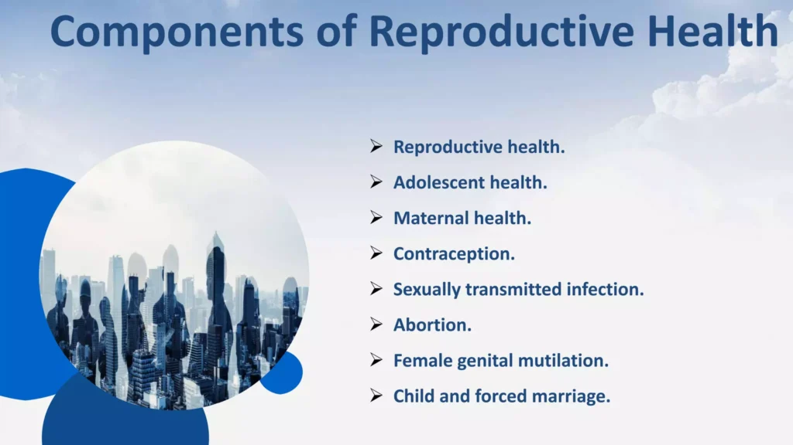
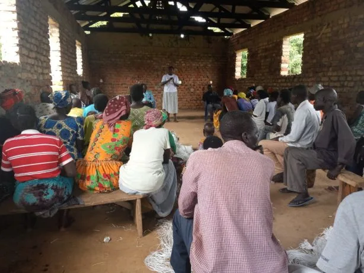

Expanded Nursing Uganda Explanation
The male reproductive organ should be understood beyond a short definition. Link the concept to patient history, focused assessment, common risks, nursing priorities, documentation and evaluation of outcomes.
Contents — 18 sections (tap to expand)
01 Male Reproductive System
The organs of the male reproductive system include the testes , a system of ducts (including the epididymis, ductus deferens, ejaculatory ducts, and urethra), accessory sex glands (seminal vesicles, prostate, and bulbo-urethral glands), and several supporting structures , including the scrotum and the penis
Male reproductive system functions vital for reproduction and urinary excretion.
Testes :
- Production of Spermatozoa : Spermatogenesis occurs in the testes, generating mature sperm cells.
- Maturation and Storage : Epididymis facilitates sperm maturation and serves as a storage site.
- Epididymal Maturation: Sperm undergo maturation in the epididymis, gaining motility and fertilization potential.
- Testosterone : Produced by testes, influences sperm production and development of secondary sexual characteristics. Regulated by the hypothalamus-pituitary-gonadal axis.
Ejaculatory Duct:
- Vas deferens transports mature sperm to the ejaculatory duct, contractions facilitate sperm release during ejaculation.
Seminal Vesicles, Prostate Gland, and Bulbourethral Glands:
- Contribute secretions to form semen, enhancing sperm viability.
- Semen nourishes and protects sperm during transport in the female reproductive tract.
Penis and Urethra:
- Copulation and Sperm Delivery : Penis facilitates copulation and the delivery of sperm into the female reproductive tract.
- Urethra serves as the passageway for both semen and urine.
02 Scrotum
The scrotum is a pouch of pigmented skin, fibrous and connective tissue and smooth muscle .
- It is divided into two compartments , each of which contains one testis , one epididymis and the testicular end of a spermatic cord .
- It lies below the symphysis pubis, in front of the upper parts of the thighs and behind the penis.
- Externally , the scrotum looks like a single pouch of skin separated into lateral portions by a median ridge called the raphe .
- Internally , the scrotum is separated into two sacs by the septum . The septum is made up of a subcutaneous layer and muscle tissue called the dartos muscle , which is composed of bundles of smooth muscle fibers.
- Associated with each testis in the scrotum is the cremaster muscle , a series of small bands of skeletal muscle that descend as an extension of the internal oblique muscle through the spermatic cord to surround the testes.
- The location of the scrotum and the contraction of its muscle fibers regulate the temperature of the testes . Normal sperm production requires a temperature about 2 to 3 ° C below core body temperature. This lowered temperature is maintained within the scrotum because it is outside the pelvic cavity.
- In response to cold temperatures, the cremaster and dartos muscles contract. Contraction of the cremaster muscles moves the testes closer to the body, where they can absorb body heat.
- Contraction of the dartos muscle causes the scrotum to become tight (wrinkled in appearance) , which reduces heat loss . Exposure to warmth reverses these actions.
03 Testes
The testes are the male reproductive glands and are the equivalent of the ovaries in the female.
- They are about 4.5 cm long, 2.5 cm wide and 3 cm thick and are suspended in the scrotum by the spermatic cords.
They are surrounded by three layers of tissue.
- Tunica vaginalis. This is a double membrane, forming the outer covering of the testes , and is a downgrowth of the abdominal and pelvic peritoneum. During early fetal life, the testes develop in the lumbar region of the abdominal cavity just below the kidneys. They then descend into the scrotum, taking with them coverings of peritoneum, blood and lymph vessels, nerves and the deferent duct. The peritoneum eventually surrounds the testes in the scrotum, and becomes detached from the abdominal peritoneum. Descent of the testes into the scrotum should be complete by the 8th month of fetal life.
- Tunica albuginea . This is a fibrous covering beneath the tunica vaginalis. Ingrowths form septa, dividing the glandular structure of the testes into lobules . Each of the 200–300 lobules contains one to three tightly coiled tubules, the seminiferous tubules where sperm are produced. The process by which the seminiferous tubules of the testes produce sperm is called spermatogenesis . The seminiferous tubules contain two types of cells: spermatogenic cells , the sperm-forming cells, and Sertoli cells , which have several functions in supporting spermatogenesis. Sertoli cells nourish spermatocytes, spermatids, and sperm; phagocytize excess spermatid cytoplasm as development proceeds; and control movements of spermatogenic cells and the release of sperm into the lumen of the seminiferous tubule. They also produce fluid for sperm transport, secrete the hormone inhibin, and regulate the effects of testosterone and FSH (follicle-stimulating hormone).
- Tunica vasculosa . . The tunica vasculosa is the vascular layer of the testis, consisting of a plexus of blood vessels, held together by delicate areolar tissue.
04 Spermatic cords/ Vas Deferens
- The spermatic cords suspend the testes in the scrotum .
- Each cord contains a testicular artery , testicular veins , lymphatics , a deferent duct and testicular nerves , which come together to form the cord from their various origins in the abdomen.
- The cord, which is covered in a sheath of smooth muscle and connective and fibrous tissues, extends through the inguinal canal and is attached to the testis on the posterior wall.
- The deferent duct is around 45 cm long. It passes upwards from the testis through the inguinal canal and ascends medially towards the posterior wall of the bladder where it is joined by the duct from the seminal vesicle to form the ejaculatory duct.
05 Seminal Vesicles
- The seminal vesicles are two small fibromuscular pouches , 5 cm long, lined with columnar epithelium and lying on the posterior aspect of the bladder
- At its lower end each seminal vesicle opens into a short duct, which joins with the corresponding deferent duct to form an ejaculatory duct.
Functions
- The seminal vesicles contract and expel their stored contents, seminal fluid , during ejaculation.
Seminal fluid, which forms 60% of the volume of semen, is alkaline to protect the sperm in the acidic environment of the vagina , and contains fructose to fuel the sperm during their journey through the female reproductive tract.
06 Ejaculatory ducts
- The ejaculatory ducts are two tubes about 2 cm long, each formed by the union of the duct from a seminal vesicle and a deferent duct .
- They pass through the prostate gland and join the prostatic urethra, carrying seminal fluid and spermatozoa to the urethra .
- The walls of the ejaculatory ducts are composed of the same layers of tissue as the seminal vesicles.
07 Prostate gland
- The prostate gland lies in the pelvic cavity in front of the rectum and behind the symphysis pubis, completely surrounding the urethra as it emerges from the bladder.
- It has an outer fibrous covering, enclosing glandular tissue wrapped in smooth muscle. The gland weighs about 8 g in youth, but progressively enlarges (hypertrophies) with age and is likely to weigh about 40 g by the age of 50.
- The prostate gland secretes a thin , milky fluid(slightly acidic fluid (pH about 6.5) that makes up about 30% of the volume of semen , and gives it its milky appearance.
- Several proteolytic enzymes , such as prostate-specific antigen (PSA) , pepsinogen, lysozyme, amylase, and hyaluronidase, eventually break down the clotting proteins from the seminal vesicles.
- The clotting enzyme thickens the semen in the vagina , increasing the likelihood of semen being retained close to the cervix.
08 Bulbourethral glands
- The paired bulbourethral glands or Cowper’s glands are about the size of peas.
- They are located inferior to the prostate on either side of the membranous urethra within the deep muscles of the perineum, and their ducts open into the spongy urethra .
- During sexual arousal , the bulbourethral glands secrete an alkaline fluid into the urethra that protects the passing sperm by neutralizing acids from urine in the urethra .
- They also secrete mucus that lubricates the end of the penis and the lining of the urethra, decreasing the number of sperm damaged during ejaculation.
09 Penis
- The penis contains the urethra and is a passageway for the ejaculation of semen and the excretion of urine .
- It is cylindrical in shape, consists of a body , glans penis , and a root.
- The body of the penis is composed of three cylindrical masses of tissue, each surrounded by fibrous tissue called the tunica albuginea
- The two dorso-lateral masses are called the corpora cavernosa , the smaller mid-ventral mass, the corpus spongiosum , contains the spongy urethra and keeps it open during ejaculation.
- Skin and a subcutaneous layer enclose all three masses, which consist of erectile tissue . Erectile tissue is composed of numerous blood sinuses (vascular spaces) lined by endothelial cells and surrounded by smooth muscle and elastic connective tissue.
- The distal end of the corpus spongiosum is a slightly enlarged, called the glans penis. . The distal urethra enlarges within the glans penis and forms a terminal slit-like opening, the external urethral orifice.
- Covering the glans in an uncircumcised penis is the loosely fitting prepuce, or foreskin.
- The bulb of the penis is attached to the inferior surface of the deep muscles of the perineum and is enclosed by the bulbo-spongiosus muscle, a muscle that aids ejaculation .
- The weight of the penis is supported by two ligaments that are continuous with the fascia of the penis, The fundiform ligament arises from the inferior part of the linea Alba and The suspensory ligament of the penis arises from the pubic symphysis.
10 Sperm/Spermatozoa
- Each day, approximately 300 million sperm complete spermatogenesis.
- Spermatogenesis is the process by which haploid(a single set of chromosomes) spermatozoa develop from germ cells in the seminiferous tubules of the testicle.
- A sperm is about 60 micrometres long, major parts of a sperm are the head and the tail.
- The head , about 4–5 micrometres long, contains a nucleus with 23 highly condensed chromosomes.
- The acrosome , covering the anterior two-thirds of the nucleus, is a cap-like vesicle filled with enzymes, including hyaluronidase and proteases, aiding in penetrating the secondary oocyte during fertilization.
- The tail is subdivided into neck , middle piece , principal piece , and end piece .
- The neck contains centrioles, the middle piece has mitochondria for energy (ATP) production , and the principal and end pieces contribute to the tail’s length.
- Once ejaculated, most sperm do not survive more than 48 hours within the female reproductive tract.
11 Semen
- Semen is a mixture of sperm and seminal fluid from the seminiferous tubules, seminal vesicles, prostate, and bulbourethral glands.
- The typical ejaculation volume is 2.5–5 millilitres, containing 50–150 million sperm per millilitre.
- Seminal fluid provides sperm with transportation, nutrients, and protection.
- Coagulation proteins from seminal vesicles cause semen to coagulate within 5 minutes of ejaculation.
- Prostate-specific antigen (PSA) and other enzymes from the prostate lead to semen re-liquefying after 10 to 20 minutes .
- The prostate gland secretes a fluid making up about 30% of semen, contributing to its milky appearance.
- Functions of hormones in spermatogenesis include FSH stimulating sperm production , LH promoting testosterone production , and inhibin decreasing FSH secretion .
- The process of spermatogenesis starts at puberty , with millions of sperm formed daily under testosterone influence.
- Erection is initiated by parasympathetic fibres releasing nitric oxide, causing blood flow to erectile tissue.
- Ejaculation is a sympathetic reflex releasing semen from the urethra; emission may precede it, and muscular contractions are involved.
12 Process of Erection:
- Erection refers to the enlargement and stiffening of the penis .
- Sexual stimulation (visual, tactile, auditory, olfactory, or imagined) triggers parasympathetic fibres from the sacral portion of the spinal cord to release nitric oxide (NO) .
- NO(Nitric Oxide) causes relaxation of smooth muscle in the walls of arterioles supplying erectile tissue, leading to dilation of these blood vessels .
- This dilation allows a substantial amount of blood to enter the erectile tissue of the penis.
- NO also induces relaxation of the smooth muscle within the erectile tissue, resulting in the widening of the blood sinuses , contributing to the overall erection.
- Expansion of the blood sinuses compresses the veins draining the penis , slowing blood outflow and helping to sustain the erection .
13 Process of Ejaculation:
- Ejaculation is the forceful release of semen from the urethra to the exterior.
- It is a sympathetic reflex coordinated by the lumbar portion of the spinal cord. As part of this reflex, the smooth muscle sphincter at the base of the urinary bladder closes , preventing urine expulsion during ejaculation and semen entry into the urinary bladder.
- Before ejaculation, peristaltic contractions in the epididymis, ductus (vas) deferens, seminal vesicles, ejaculatory ducts, and prostate propel semen into the penile portion of the urethra (spongy urethra), typically leading to emission—discharge of a small semen volume before ejaculation. Emission may also occur during sleep ( nocturnal emission ).
- The musculature of the penis (bulbospongiosus, ischiocavernosus, and superficial transverse perineus muscles), supplied by the pudendal nerve, contracts during ejaculation.
- After sexual stimulation ends , the arterioles supplying the erectile tissue of the penis constrict , and the smooth muscle within the erectile tissue contracts , reducing the size of the blood sinuses. This relieves pressure on the veins, allowing blood to drain, and the penis returns to its flaccid ( relaxed ) state.
14 PUBERTY IN MALES
Puberty in males starts around the ages of 10 to 14 and is marked by a surge in luteinising hormone from the anterior lobe of the pituitary gland. This hormone stimulates the interstitial cells of the testes , leading to an increased production of testosterone . The influence of testosterone triggers various changes associated with sexual maturation, including:
- Growth : There is a significant increase in height and weight, accompanied by the growth of muscles and bones.
- Voice Changes: The larynx enlarges, resulting in the deepening of the voice, commonly known as “voice breaking.”
- Development of Body Hair : Hair growth becomes prominent on the face, axillae (armpits), chest, abdomen, and pubic region.
- Genital and Prostate Growth : The penis, scrotum, and prostate gland undergo enlargement and maturation.
- Sperm Production : The seminiferous tubules mature, leading to the production of spermatozoa (sperm).
- Skin Changes : The skin undergoes thickening and increased oiliness.
15 Nursing Uganda Clinical Lens
Use Male Reproductive System as a practical nursing topic, not only a memorized definition. Start with normal structure and function, then connect it to assessment findings and disease.
- What to understand first: define male reproductive system, identify the normal or expected pattern, then explain what changes when the patient is unwell.
- Why it matters in care: the nurse must recognize risk early, explain findings clearly, document accurately and know when to escalate.
- How to revise it: connect each point to assessment, nursing diagnosis or care problem, intervention, rationale and evaluation.
16 Assessment Guide
- Relevant inspection, palpation, movement, auscultation, vital signs or neurological checks.
- Normal findings, abnormal findings and what each abnormality may indicate.
- Patient history, risk factors and how the body system affects other systems.
17 Nursing Priorities, Rationales and Outcomes
- Use anatomy to explain symptoms and guide focused assessment.
- Recognize findings that need urgent escalation.
- Teach the patient using simple body-system language.
The rationale for these priorities is patient safety: nursing actions should prevent deterioration, reduce discomfort, support recovery and create clear evidence for the next caregiver.
- Expected outcome: The learner can explain normal function, identify abnormal signs and connect them to nursing action.
18 Patient Teaching and Revision Check
- Explain male reproductive system in simple language the patient or caregiver can repeat back.
- Teach warning signs, medicine or follow-up instructions, hygiene or lifestyle points where relevant.
- For exams, prepare a short answer using: definition, causes or risk factors, signs, assessment, management, complications and prevention.
- For ward practice, document baseline findings, actions taken, patient response and the plan for review.
Illustrations and Diagrams (12)




4 more diagrams available — open the lesson for full illustrations.
Related Video Lectures
Watch nursing lecture videos on YouTube for this topic. Opens in a new tab.
Watch on YouTubeExternal link: YouTube may use its own cookies and terms. Nursing Uganda is not affiliated with YouTube.